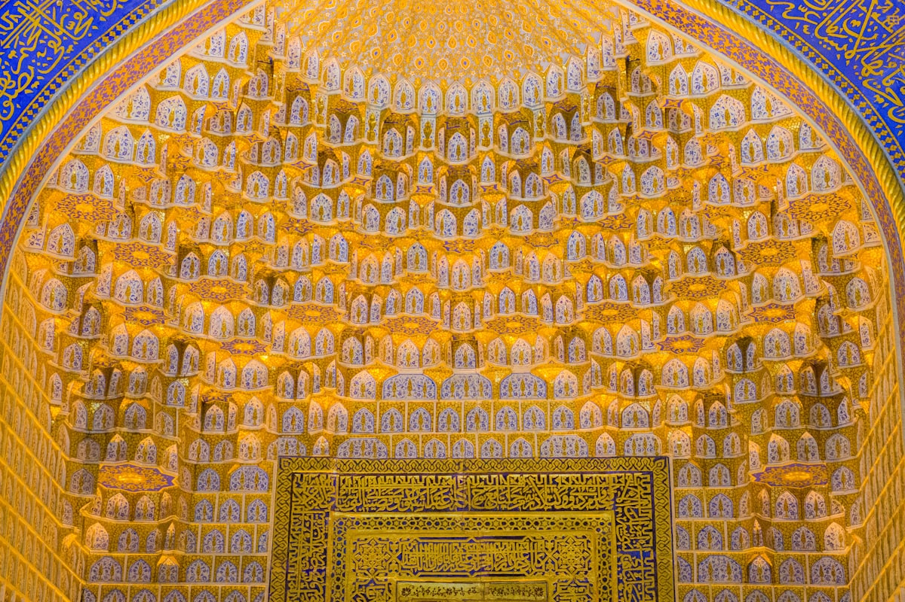
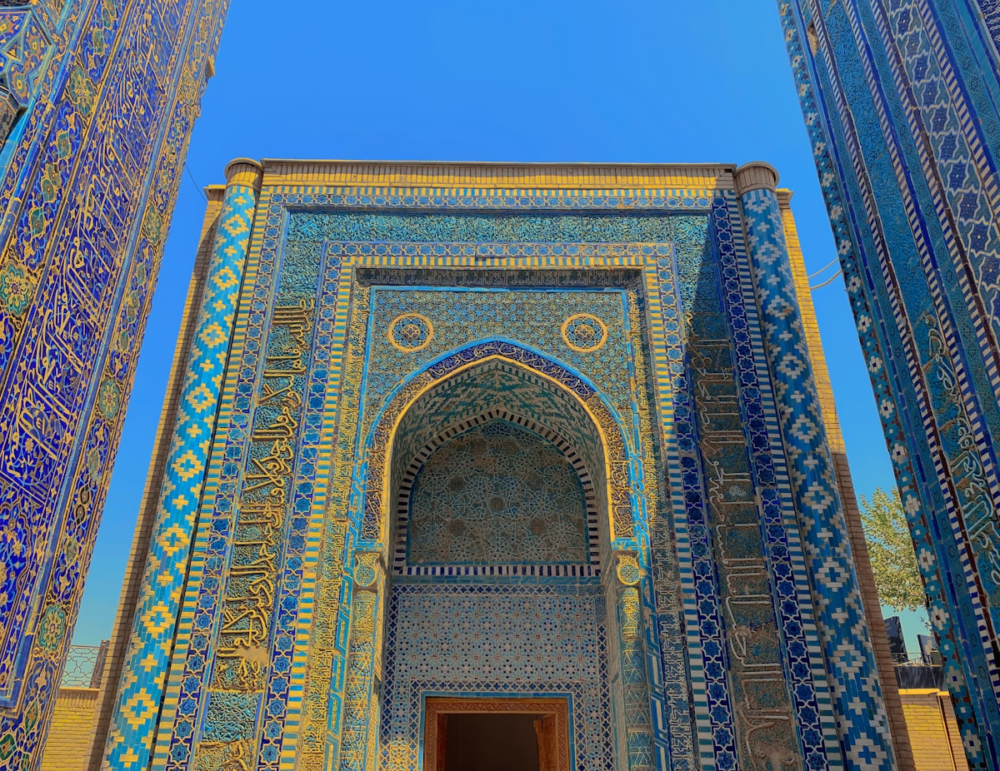
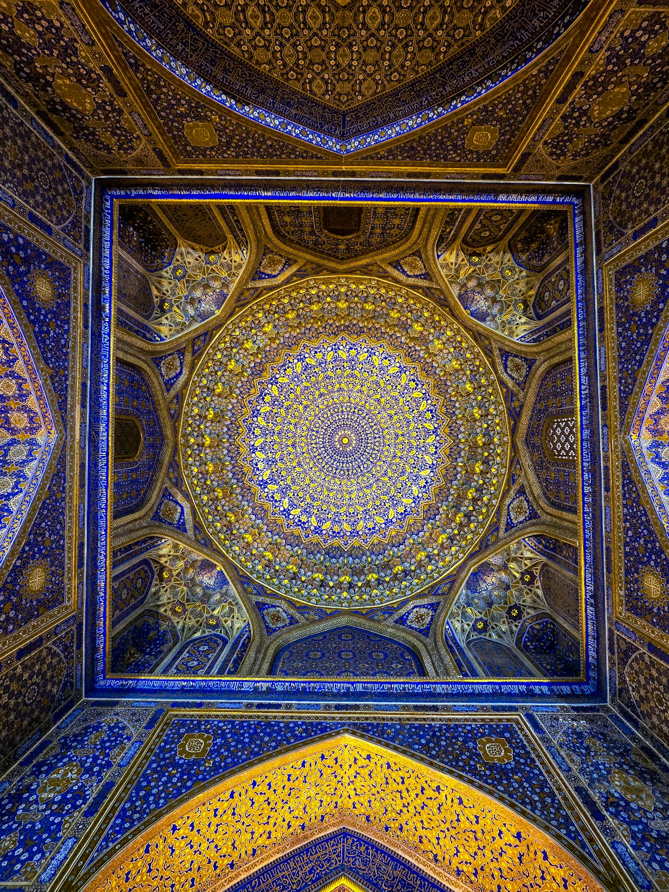
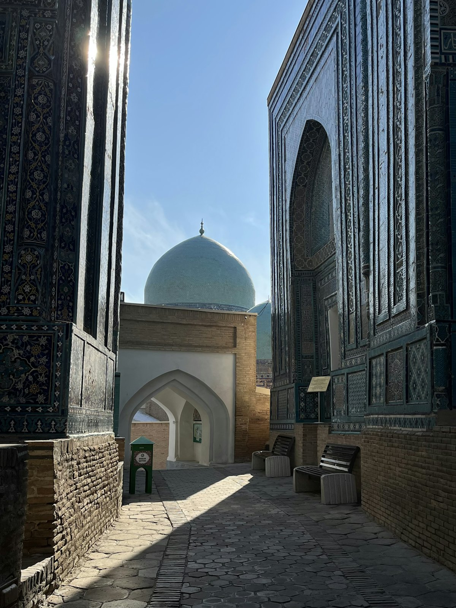
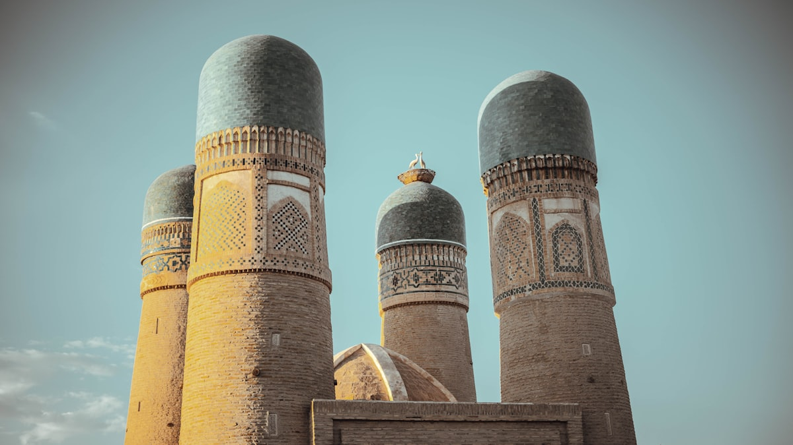
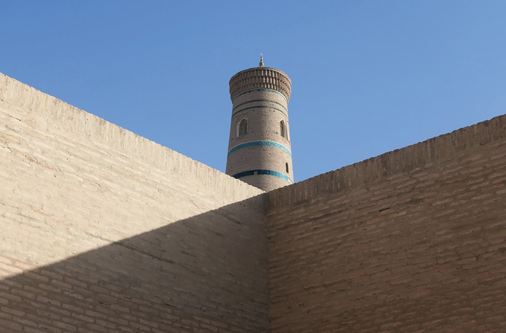
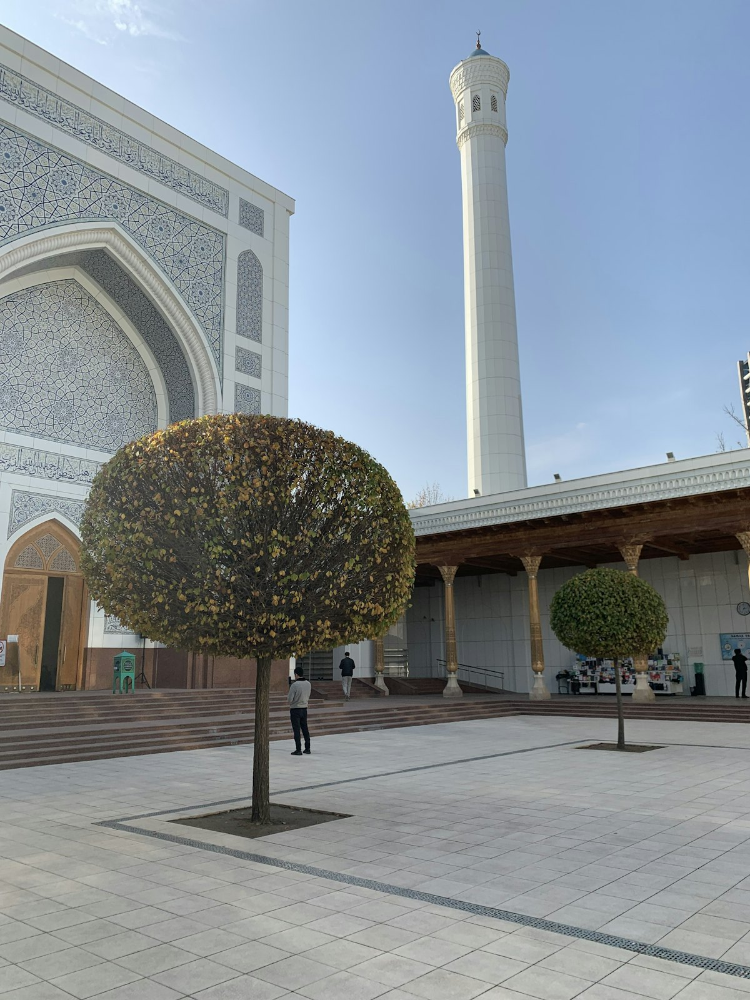
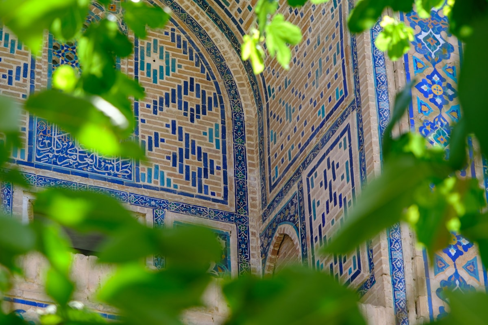

| 事项 | 结论 |
|---|---|
| 事项 | 结论 |
| 签证（最省心） | 中乌互免签证协定 2025-06-01 生效：中国普通护照免签 30 天，11 天行程完全覆盖，无需电子签 |
| 推荐方案 | 塔什干 2 天 → 撒马尔罕 3 天 → 布哈拉 3 天 → 希瓦 2 天，城际靠高铁+夜车 |
| 返程约束 | 第 11 天从希瓦经乌尔根奇✈塔什干转机返京，航班衔接至少留 4h |
| 行程链 | 北京 → 塔什干 → 撒马尔罕 → 布哈拉 → 希瓦 → 塔什干 → 北京 |
| 预算（人均） | 经济 6000–9000 ／ 标准 11000–16000 ／ 舒适 25000–35000（人民币） |
| 三件提前事 | ① 高铁票提前 45 天开抢 ② 布哈拉/希瓦古宅民宿提前 2–3 周 ③ 换汇带美元现金+银联卡 |
| 季节提醒 | 4–5 月与 9–10 月最佳；6–8 月沙漠酷热（希瓦可达 40°C+）；冬季干冷但游客少 |
| 货币/支付 | 1 元 ≈ 1750 索姆；现金为主，景区门票、民宿多收现金，打车用 Yandex Go |
以下为 11 天 10 晚的推荐节奏：塔什干做门户，一路向西走撒马尔罕 → 布哈拉 → 希瓦，最后经乌尔根奇飞回塔什干转机返京。每日主景点 ≤2 个，城际交通以高铁 Afrosiyob + 夜班火车为主。
| 日期 | 行程 | 过夜地 | 主题 |
|---|---|---|---|
| D1 抵塔什干 | 北京✈塔什干（直飞约 6.5–7h），入住市区，独立广场夜景 | 塔什干 | 抵达+预热 |
| D2 | 独立广场 → 塔什干地铁（太空人站）→ 帖木儿历史博物馆 → 哈兹拉提·伊玛目老城 | 塔什干 | 首都一日 |
| D3 | Afrosiyob 高铁到撒马尔罕（2h10min），午后雷吉斯坦广场 → 夏伊辛达日落 | 撒马尔罕 | 高铁+初见 |
| D4 | 古尔埃米尔陵墓 → 雷吉斯坦晨拍 → 阿夫拉西阿卜博物馆 → 乌鲁伯格天文台 | 撒马尔罕 | 帖木儿帝国 |
| D5 | 比比哈努姆清真寺 → 手工蓝陶工坊 → 锡亚布巴扎 → 雷吉斯坦夜景 | 撒马尔罕 | 蓝金之城 |
| D6 | 高铁到布哈拉（1.5h），波依卡扬建筑群 → 卡龙宣礼塔 → 商业圆顶市场 | 布哈拉 | 布哈拉初见 |
| D7 | 雅克城堡 → 四塔清真寺 → 伊斯梅尔·萨曼陵墓 → 拉比豪兹广场 | 布哈拉 | 布哈拉深度 |
| D8 | 埃米尔夏宫 → 老城小巷漫步 → 夜火车赴希瓦 | 布哈拉 | 布哈拉收尾 |
| D9 | 清晨抵希瓦，伊钦卡拉内城：卡尔塔米纳塔 → 朱玛清真寺 → 城墙日落 | 希瓦 | 进希瓦 |
| D10 | 伊斯兰霍贾宣礼塔登顶 → 塔什豪里宫 → 帕赫拉万陵墓 → 民宿屋顶晚餐 | 希瓦 | 希瓦内城 |
| D11 返程 | 包车到乌尔根奇（35km）→ 乌尔根奇✈塔什干 → 转机返京 | — | 收尾 |
以下为 11 天全程的逐小时执行时间线，可当作「当天打开照着走」的清单。标注 ※ 的可选项视体力与天气取舍。
| 时间 | 事项 |
|---|---|
| 15:45–19:40 | 北京✈塔什干（国航 CA777 或乌航 HY506，直飞约 6h15min–6h55min），塔什干比北京晚 3 小时 |
| 20:00–21:30 | 机场换小额索姆现金 + 打车入住市区酒店（机场到独立广场约 15–20 分钟车程） |
| 21:30–22:30 | 独立广场散步看夜景，便利店备点零食，早休息倒时差（时差仅 -3h） |
| 时间 | 事项 |
|---|---|
| 08:30–10:00 | 独立广场（免费）：独立纪念碑、永恒之火、国家会议中心，苏联风格的宽大中轴线 |
| 10:00–12:00 | 塔什干地铁（单程约 1700–3000 索姆）：中亚第一条地铁（1977 年通车），重点打卡太空人站 Kosmonavtlar、诗人站 Alisher Navoiy |
| 12:00–13:30 | 午餐：手抓饭中心（Plov Centre，中亚最大，人均约 30–50 元）或乔尔苏巴扎 |
| 14:00–16:00 | 帖木儿历史博物馆（成人 40000 索姆）：帖木儿帝国文物，蓝顶建筑本身就很出片（国家历史博物馆翻新中，以帖木儿馆替代） |
| 16:30–19:00 | 哈兹拉提·伊玛目老城（免费）：奥斯曼古兰经、巴拉克汗经学院、库克达什经学院，日落前光线最好 |
| 时间 | 事项 |
|---|---|
| 07:30–09:40 | Afrosiyob 高铁：塔什干→撒马尔罕约 2h10min，经济舱约 311000 索姆（约 180 元人民币） |
| 10:00–11:30 | 入住撒马尔罕老城民宿（雷吉斯坦周边，步行可达），放行李休整 |
| 12:00–13:30 | 午餐：撒马尔罕烤包子（Samsa）或手抓饭 |
| 14:00–17:30 | 雷吉斯坦广场（成人约 60000–80000 索姆，含三座经学院）：乌鲁伯格、舍尔-多尔、季里雅-卡里，蓝金马赛克穹顶 |
| 18:00–19:30 | 夏伊辛达陵墓群（30000 索姆）：蓝绿瓷砖长廊如永生之路，日落时分光影最美 |
| 时间 | 事项 |
|---|---|
| 08:00–09:30 | 古尔埃米尔陵墓（30000–40000 索姆）：帖木儿长眠之地，金叶穹顶与墨绿玉石棺，泰姬陵的灵感来源 |
| 10:00–12:30 | 雷吉斯坦广场晨拍 + 三座经学院内部参观（早到人少） |
| 12:30–14:00 | 午餐：锡亚布巴扎（Siyob Bazaar）现榨石榴汁、干果、烤包子 |
| 14:30–16:30 | 阿夫拉西阿卜遗址 + 博物馆（约 30000 索姆）：粟特时期壁画，玄奘笔下的康居国 |
| 17:00–19:00 | 乌鲁伯格天文台（25000 索姆）：15 世纪巨型六分仪遗址 + 天文博物馆 |
| 时间 | 事项 |
|---|---|
| 08:30–10:30 | 比比哈努姆清真寺（50000–75000 索姆）：帖木儿为爱妻所建的巨型清真寺，庭院里有巨型古兰经台 |
| 11:00–13:00 | 手工蓝陶工坊（免费参观，可付费体验）：撒马尔罕蓝陶工艺，看师傅拉坯上釉 |
| 13:00–14:30 | 午餐：雷吉斯坦景观餐厅或老城茶馆 |
| 15:00–17:00 | 自由安排：雷吉斯坦咖啡馆下午茶，或老城小巷拍人像 |
| 18:30–20:30 | 雷吉斯坦夜景灯光秀（如开放），返民宿打包行李 |
| 时间 | 事项 |
|---|---|
| 08:30–10:00 | Afrosiyob 高铁：撒马尔罕→布哈拉约 1.5h，经济舱约 214000 索姆（约 120 元人民币） |
| 10:30–12:00 | 入住布哈拉古宅民宿（老城改造，庭院氛围绝佳） |
| 12:00–14:00 | 午餐：布哈拉烤肉（Shashlik）+ 拉格曼拉面 |
| 14:30–17:00 | 波依卡扬建筑群：卡龙宣礼塔（47 米，1127 年建成，连成吉思汗都惊叹未拆）+ 卡隆清真寺（25000 索姆）+ 米尔阿拉伯经学院外观 |
| 17:30–19:00 | 商业圆顶市场 Trading Domes（免费）：银器穹顶、织物穹顶，砍价买手信 |
| 时间 | 事项 |
|---|---|
| 09:00–12:00 | 雅克城堡 Ark（约 60000 索姆）：千年王城 + 城堡博物馆，从城上俯瞰布哈拉老城最佳视角 |
| 12:00–13:30 | 午餐：波依卡扬附近茶馆抓饭 |
| 14:00–15:30 | 四塔清真寺 Chor Minor（免费）：四根小塔的独特清真寺，孤独星球中亚封面取景地 |
| 16:00–18:00 | 伊斯梅尔·萨曼陵墓（25000 索姆）：10 世纪砖砌陵墓，中亚最古老的伊斯兰建筑之一 |
| 18:30–20:00 | 拉比豪兹广场（免费）：水池 + 老茶馆，布哈拉最文艺的角落，喝一壶茶看日落 |
| 时间 | 事项 |
|---|---|
| 09:00–11:30 | 埃米尔夏宫 Sitorai Mokhi-Khosa（约 30000 索姆）：布哈拉埃米尔的夏日宫殿，白蓝相间的外墙 |
| 12:00–14:00 | 午餐：布哈拉烤鱼 + 馕坑烤肉（Tandyr） |
| 14:30–17:00 | 老城自由漫步：经学院补拍、古宅喝茶、买丝毯手信 |
| 19:00–次日 | 夜火车赴希瓦（约 7–8h，卧铺约 80000 索姆起），车上睡一觉 |
| 时间 | 事项 |
|---|---|
| 06:30–08:00 | 清晨抵希瓦，入住伊钦卡拉内城民宿（老宅改造，先寄存行李） |
| 08:30–10:30 | 伊钦卡拉内城（西门 Ata Darvaza 买通票 100000–250000 索姆）：卡尔塔米纳塔（未完工的蓝塔，希瓦象征） |
| 10:30–12:30 | 朱玛清真寺：218 根木柱支撑的大厅，天然天窗采光；穆罕默德·阿明汗经学院（现为酒店，庭院可参观） |
| 12:30–14:00 | 午餐：希瓦名菜希维特奥什（莳萝绿面条配肉汁） |
| 15:00–18:00 | 内城小巷漫步：阿拉库里汗经学院、商队旅馆、手工艺作坊 |
| 18:30–20:00 | 城墙看日落（登城墙约 40000 索姆另付）或民宿屋顶看宣礼塔剪影 |
| 时间 | 事项 |
|---|---|
| 08:00–09:30 | 伊斯兰霍贾宣礼塔登顶（登塔约 100000 索姆，不包含在通票内）：45 米俯瞰全城，日出光线最佳 |
| 10:00–12:00 | 塔什豪里宫：花剌子模可汗宫殿，蓝白马赛克与精美木雕 |
| 12:00–14:00 | 午餐：图洪巴拉克（蛋馅饺子）或茶馆抓饭 |
| 14:30–16:30 | 帕赫拉万·马赫穆德陵墓（另行购票）+ 库纳·阿克城堡观景台 |
| 17:00–19:00 | 手工艺体验（木雕/陶艺，约 5–10 美元）或内城咖啡馆，民宿屋顶晚餐收尾 |
| 时间 | 事项 |
|---|---|
| 06:30–07:30 | 早餐后退房，包车/打车去乌尔根奇机场（UGC，35km，约 40 分钟，约 5–7 美元） |
| 09:00–10:30 | 乌尔根奇✈塔什干（约 1.5h，提前订单程约 30–50 美元） |
| 11:00–13:00 | 塔什干机场午餐，或市区最后补货（机场可寄存行李） |
| 15:00–21:00 | 塔什干✈北京（直飞约 6.5–7h），入境到家 |
必去（必去）/ 顺路（顺路）/ 可跳过（可跳过）。

必去
必去
必去
必去
必去
顺路
顺路图片为 Unsplash 主题图（雷吉斯坦、古尔埃米尔、夏伊辛达、布哈拉卡龙宣礼塔、希瓦伊钦卡拉、塔什干建筑、撒马尔罕蓝陶等均为乌兹别克实景），用于页面配图。更多免费景点：独立广场、锡亚布巴扎、拉比豪兹广场、商业圆顶市场、哈兹拉提·伊玛目老城。
点击左侧节点可在地图上定位；点击地图 marker 会高亮对应节点。坐标为 WGS-84 转 GCJ-02 纠偏后标注。
以下为单人、不含购物的估算，人民币计价；出发地基准北京。汇率按 1 元 ≈ 1750 索姆估算，美元换汇更稳定。往返机票按淡季直飞 3200–4200 元计，旺季（4–5 月/9–10 月）会明显上浮。
| 项目 | 经济（6000–9000） | 标准（11000–16000） | 舒适（25000–35000） |
|---|---|---|---|
| 往返机票 | 北京⇄塔什干 3200–3800 | 含乌尔根奇段 4200–5200 | 直飞商务/灵活 9000–13000 |
| 住宿（10 晚） | 青旅/民宿 70–120/晚 | 古宅民宿/精品 250–500/晚 | 五星/精品 1200–2000/晚 |
| 城际交通 | 高铁+夜火车 800–1200 | 高铁+夜火车+包车 1800–2800 | 包车+国内航班 5000–8000 |
| 门票 | 基础景点 300–500 | 含灯光秀/通票 600–900 | 全含+体验课 1500–2500 |
| 餐饮（11 天） | 茶馆+市场 900–1500 | 正常下馆子 2000–3000 | 景观餐厅+民俗餐 6000–9000 |
砍掉希瓦：塔什干 2 天 + 撒马尔罕 3 天 + 布哈拉 3 天，全程高铁衔接，8 天最从容；若只有 7 天，把布哈拉压到 2 天即可。返回塔什干直接转机，不折腾乌尔根奇段。
多留 2–3 天北上：努库斯的萨维茨基博物馆（收藏被苏联查禁的前卫艺术，被称为「沙漠中的卢浮宫」）与咸海岸边的穆伊纳克船坟场，是小众但极震撼的一程，适合对苏联史、艺术与失落文明有兴趣的旅行者。
| 方式 | 时长 | 参考价 | 备注 |
|---|---|---|---|
| 直飞（推荐） | 北京→塔什干约 6.5–7h | 往返 3200–4200 元 | 国航 CA777 每周 3 班；乌航 HY506（大兴机场）787 执飞 |
| 转机 | 8–12h | 2500–3800 元 | 经乌鲁木齐/伊斯坦布尔/阿拉木图，便宜但耗时长 |
| 国内段衔接 | 乌尔根奇✈塔什干约 1.5h | 单程 30–50 美元 | 去希瓦必经乌尔根奇机场（UGC），提前 2 周订 |
| 区域 | 价格/晚 | 优点 | 短板 |
|---|---|---|---|
| 塔什干·独立广场/市中心 | 经济 150–250 / 标准 300–500 | 地标集中、离机场近、商圈齐全 | 旺季涨价快 |
| 撒马尔罕·老城民宿 | 经济 120–220 / 标准 250–450 | 步行到雷吉斯坦，庭院氛围绝佳 | 老宅隔音一般 |
| 布哈拉·老城古宅民宿 | 经济 70–150 / 标准 300–450 | 住进千年古宅，早餐含庭院 | 老宅设施偏基础 |
| 希瓦·伊钦卡拉内城 | 民宿 110–145 / 精品 290–435 | 住进古城墙内，屋顶日出日落 | 房间偏小、夏季闷热 |
| 希瓦·外城 | 经济 73–110 | 便宜、本地生活气息浓 | 离内城需步行 10–20 分钟 |